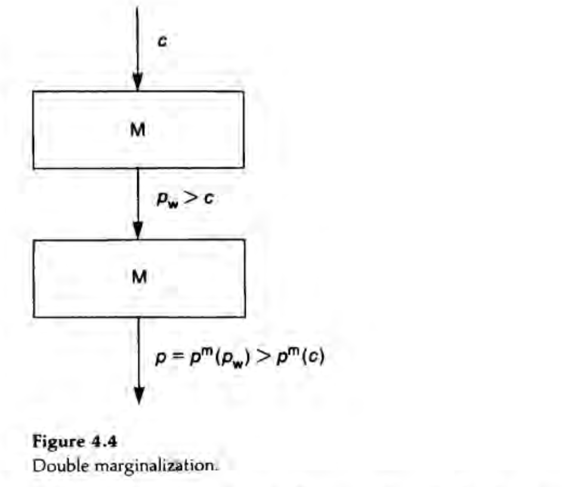

3 Externalities and Vertical Control
3.1 Methodology
The vertical structure determines a number of decision variables: wholesale price, franchise fee, quantity purchased by the retailer, consumer price, promotional effort, and so forth.
In practice, only a few of these variables are observable and verifiable; these variables are called instruments.
Let us call the sum of the manufacturer’s and the retailer’s profits the aggregate profit.
The targets form another subset of decision variables, which are those directly affecting the aggregate profit.
Assume that the manufacturer chooses contract, and the retailers accept the contract only if it guarantees them at least what they would get by refusing it.
3.1.1 4.2.2 The Basic Vertical Externality
- The vertical externality is that any decision made by the retailer that increases his demand for the intermediate good by one unit generates an incremental profit of \(p_{w} - c\) for the manufacturer.
- The retailer, who maximizes his own profit, does not take the manufacturer’s incremental profit into account, and therefore tends to make decisions that lead too low a consumption of intermediate good.
Example 1: Double Marginalization (Spengler 1950)
- Suppose that the retailer’s only decision is the retail price.
- The vertically integrated quantity \(q_{m}\) and retail price \(p_{m}\) are determined by \(q_{m} = D(p_{m})\), and \(p_{m}\) maximizes $(p - c)D(p).
- Consider the decentralized structure and the retailer’s choice of the consumder price \(p\) under linear wholesale tariff \(T(q) = p_{w}q\).
- Assume that the manufacturer chooses the linear tariff first and the retailer chooses the consumer price second.
- The retailer is a monopolist in the retail market.

- The externality arises because the retailer does not take the manufacturer’s marginal profit, \((p_{w} - c)D'(p)\), into account when choosing a retail price.
- To see this, assume that the final-demand function is \(D(p) = 1 - p\) and that \(c < 1\).
- Let \(\Pi_{m}\) and \(\Pi_{r}\) denote the manufacturer’s and the retailer’s profits.
- First, determine the equilibrium for the nonintegrated industry.
- The retailer solves
\[ \max_{p} [(p - p_{w})(1 - p)] \]
from which it follows that
\[ p = \frac{1 + p_{w}}{2} \]
- Then, the demand for the final good is
\[ q = \frac{1 - p_{w}}{2} \]
and the retailer’s profit
\[ \Pi_{r} = \left( \frac{1 - p_{w}}{2} \right)^2 \]
- The manufacturer solves
\[ \max_{p_{w}} \left[ (p_{w} - c)\left( \frac{1 - p_{w}}{2} \right) \right] \] from which it follows that
\[ p_{w} = \frac{1 + c}{2} \]
- Notice that
\[ \Pi^{ni} = \Pi_{m} + \Pi_{r} = \frac{(1 - c)^2}{8} + \frac{(1 - c)^2}{16} = \frac{3}{16}(1 - c)^2 \] and that \[ p = \frac{3 + c}{4} \]
- Now consider the integrated industry, which pays \(c\) per unit for its input.
- It maximizes \[ \max_{p}[(p - c)(1 - p)] \]
from which it follows that
\[ p = \frac{1 +c}{2} \]
Then the total profit is \[ \Pi^{i} = \frac{(1 - c)^2}{4} > \Pi^{ni} \]
If one of the two firms is competitive in the sense that it sells at margineal cost, then vertical integration does not increase the profit of the monopoly firm.
The intuition behind this result is that the competitive sector does not introduce a price distortion.
Thus, the monopoly sector does not exercise an externality on the competitive sector, whose price-cost margin is zero.
- The double-marginalization problem is very similar to that of two monopoly producers of perfectly complementary goods.
- After all, production and retailing are complements, and consumers often consume both of them in fixed proportions.
Sufficient Vertical Restraints
Franchise Fee
- The manufacturer can realize the integrated profit without integration by using a two-part tariff: \(T(q) = A + p_{w}q\).
- Recall that the issue with the linear price is that the downstream unit’s marginal cost is not equal to the vertical structure’s marginal cost.
- To eliminate this distortion, take \(p_{w} = c\).
- The retailer maximizes \[ (p - c)D(p) - A \]
and thus chooses \(p = p_{m}\).
- His profit is equal to
\[ \Pi^{m} - A \] where \(\Pi^{m} = (p_{m} - c)D(p_{m})\).
- The manufacturer can then appropriate the retailer’s profit by imposing a franchise fee equal to the vertibal structure’s profit (\(A = \Pi^{m}\)).
Resale-price maintenance
- Rather than using a franchise fee, the manufacturer can sell the intermadiate good at price \(p_{w} = p\) and then impose resale-price maintenance at \(p = p^{m}\).
- The retailer then makes zero profit, and the vertical structur’s aggregate profit equals \(\Pi^{m}\).
Welfare
- The vertical structure makes more money under vertical integration under a linear price because it realized the vertical structure’s monopoly profit.
- Consumers are better off under vertical integration because they face a lower price.
- Thus, welfare is unambiguously increased by the elimination of the double marginalization.
Example 2: Downstream Moral Hazard
- Retailers often provide services that make the manufacturer’s good more attractive to consumers.
- We can gather all these under the heading “promotional effort” or “services.”
- The manufacturer wants to encourage the retailer to supply it.
- The simplest way to do so would be to specify the level of promotional services in the contract.
- But such a contract would generally not be enforceable, as courts cannot measure such services precisely.
- Thus, incentives must be given to the retailer to overcome the associated moral-hazard problem.
- The consumer’s demand is \(q = D(p, s)\), where \(s\) is the level of promotional services.
- \(D\) decreases with \(p\) and increases with \(s\).
- Assume that supplying a level \(s\) of services costs the retailer \(\Phi(s)\) per unit of output, and that this cost can be observed by the retailer.
- \(Phi\) increeases with \(s\).
- The total service cost is thus \(q\Phi(s)\)
The vertically integrated consuemr price (\(p^{m}\)) and services (\(s^{m}\)) maximize \[ [p - c - \Phi(s)]D(p, s) \]
Let \[ \Pi^{m} = [p^{m} - c - \Phi(s^{m})]D(p^{m}, s^{m}) \]
In the decentralized structure, and for a linear price \(p_{w}\), the profits are \[ (p_{w} - c)D(p, s) \]
for the manufacturer and \[ [p - p_{w} - \Phi(s)]D(p, s) \]
for the retailer.